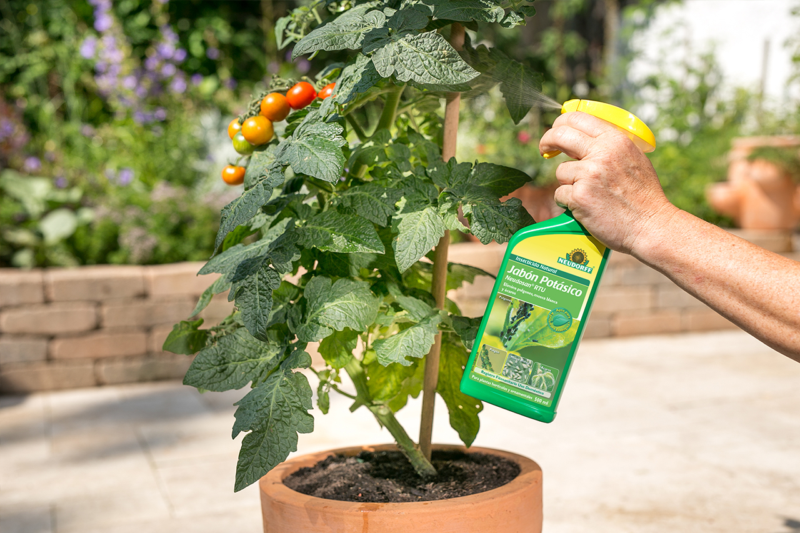
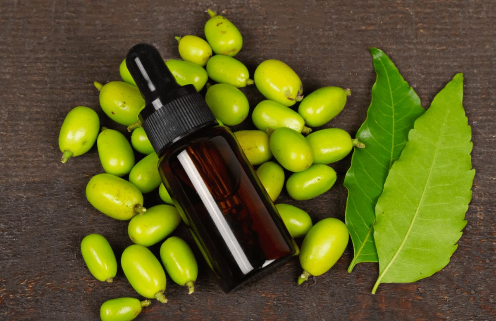
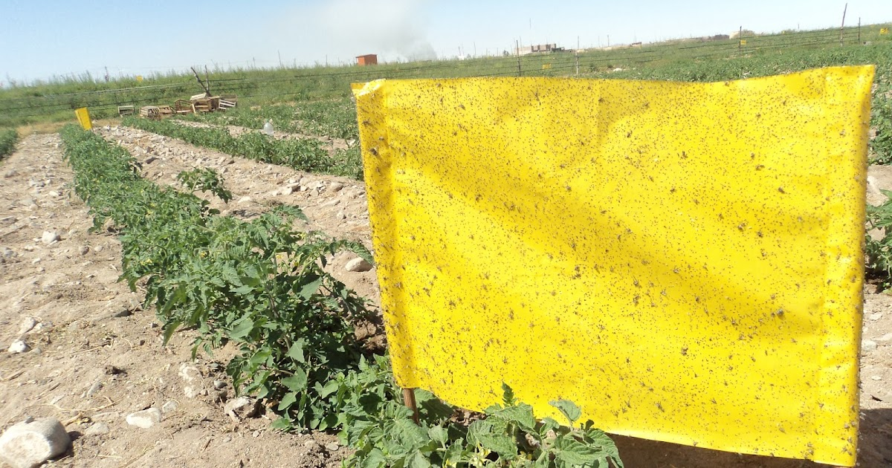
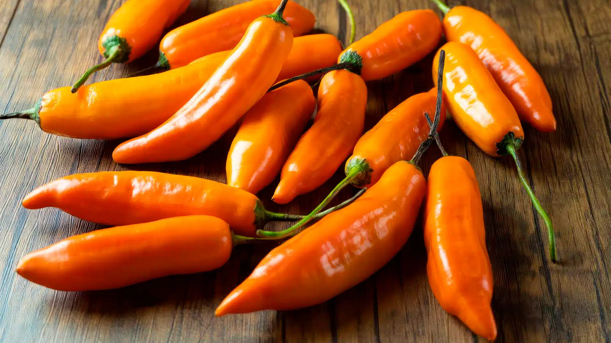
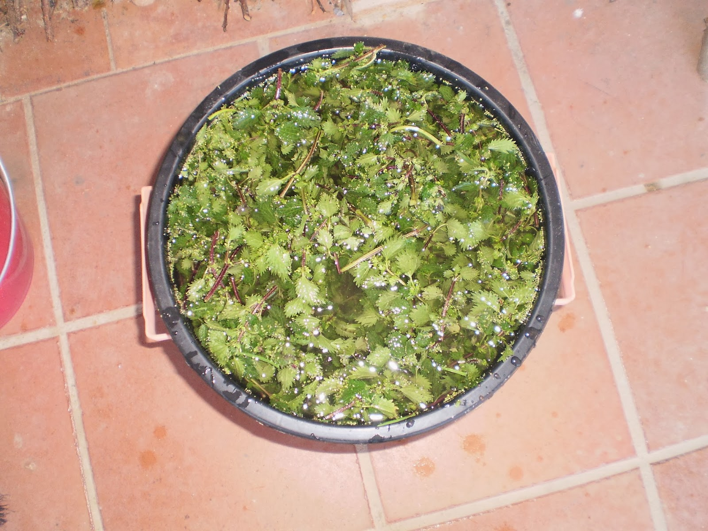

Extracto de Ajo
1.8K PostsRepelente natural utilizado para controlar pulgones, ácaros y diversas plagas agrícolas.
Descubre soluciones naturales para combatir plagas y enfermedades en tus cultivos.
Repelente natural utilizado para controlar pulgones, ácaros y diversas plagas agrícolas.

Solución ecológica para controlar insectos chupadores como pulgones y mosca blanca.

Insecticida natural de origen vegetal ampliamente usado en agricultura sostenible.

Método físico para monitorear y capturar insectos voladores presentes en los cultivos.

Preparación casera utilizada como repelente natural para múltiples plagas agrícolas.

Fertilizante y fortalecedor natural que ayuda a mejorar la resistencia de las plantas.